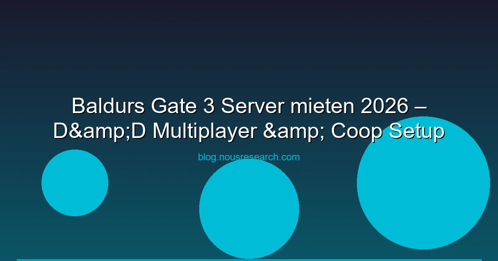

Baldur's Gate 3 hat das RPG-Genre neu definiert. Larian Studios lieferten ein episches Dungeons-and-Dragons-Abenteuer mit bis zu 4-Spieler-Koop, tiefgreifenden Entscheidungen und einer Welt die sich an deine Handlungen anpasst. Doch wie hostet man einen BG3-Server? Und welche Anbieter eignen sich für stabile D&D-Sessions?
BG3-Server-Info: Baldur's Gate 3 nutzt ein P2P-System mit einem Host. Es gibt keine offiziellen Dedicated Server von Larian. Für maximale Stabilität kannst du einen VPS als Host einsetzen.
Baldur's Gate 3 unterstützt bis zu 4 Spieler im Koop. Der Host lädt die Kampagne, die anderen schreiben sich ein. Wichtig:
Für BG3 brauchst du keine speziellen Game-Server — ein normaler VPS reicht, da das Spiel P2P nutzt. Der VPS dient als stabiler Host:
| Anbieter | Preis/Monat | RAM | Standorte | Empfehlung |
|---|---|---|---|---|
| Hetzner Cloud | ab 3,99 € | 4 GB | DE, EU | Bester DE-Host für BG3 |
| Contabo VPS | ab 4,99 € | 8 GB | DE, EU, US | Mein RAM für wenig Geld |
| OVH VPS | ab 3,50 € | 4 GB | DE, EU, US | Budget-Option |
| DigitalOcean | ab 4,00 € | 4 GB | DE, EU, US | Einfaches Setup |
Empfehlung: Hetzner Cloud für BG3 in Deutschland — günstig, performant, deutsche Server.
Wenn du einen 24/7-BG3-Server betreiben willst (z.B. für eine D&D-Gruppe):
BG3 hat einen riesigen Mod-Support über den BG3 Mod Manager und Nexus Mods:
Wichtig bei Mods: Alle Spieler müssen die gleichen Mods installiert haben. Der Host sollte eine Mod-Liste zum Teilen bereithalten.
Larian bietet keine offiziellen Dedicated Server an. Du kannst einen VPS als Windows-Rechner mit Steam nutzen, der läuft und als Host fungiert.
Maximal 4 Spieler im Koop. Mit dem "Party Size Wärter"-Mod bis zu 8 Spieler.
Ja, Steam- und GOG-Spieler können zusammen spielen. Auch Mac ist kompatibel.
Nein. Für P2P-Hosting reicht ein normaler VPS mit 2 Kernen und 8 GB RAM. Der Host-PC übernimmt die gesamte Spielogik.
Ja, aber alle Spieler müssen die gleichen Mods installieren. Vor jeder Session prüfen, ob die Mod-Liste noch passt.